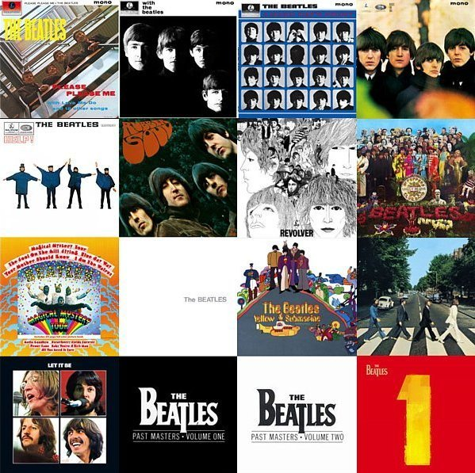

披頭！披頭！披頭！
http://en.wikipedia.org/wiki/The_Beatles
披頭唱片（如附圖）

第一列（由左至右）
Please Please Me (1963) 滾石「500大專輯」第39名。
One two three fooooour！I saw her standing there, 披頭音樂饗宴開始！
http://en.wikipedia.org/wiki/Please_Please_Me
http://www.allmusic.com/album/please-please-me-r1701841
http://www.rollingstone.com/music/lists/500-greatest-albums-of-all-time-19691231/revolver-the-beatles-19691231
With the Beatles (1963) 「滾石500大」第420名
http://en.wikipedia.org/wiki/With_the_Beatles
http://www.allmusic.com/album/with-the-beatles-reissue-r1701843
http://www.rollingstone.com/music/lists/500-greatest-albums-of-all-time-19691231/with-the-beatles-the-beatles-19691231
A Hard Day's Night (1964) 「滾石500大」第388名，第一張全部由披頭作曲的專輯。
http://en.wikipedia.org/wiki/A_Hard_Day%27s_Night_%28album%29
http://www.allmusic.com/album/a-hard-days-night-uk-r1700346
http://www.rollingstone.com/music/lists/500-greatest-albums-of-all-time-19691231/a-hard-days-night-the-beatles-19691231
Beatles for Sale (1964)
http://en.wikipedia.org/wiki/Beatles_for_Sale
http://www.allmusic.com/album/beatles-for-sale-r1700347
第二列
Help! (1965) 「滾石500大」第332名
http://en.wikipedia.org/wiki/Help%21_%28album%29
http://www.allmusic.com/album/help-r1701644
http://www.rollingstone.com/music/lists/500-greatest-albums-of-all-time-19691231/help-the-beatles-19691231
Rubber Soul (1965) 「滾石500大」第五名
http://en.wikipedia.org/wiki/Rubber_Soul
http://www.allmusic.com/album/rubber-soul-r1701847
http://www.rollingstone.com/music/lists/500-greatest-albums-of-all-time-19691231/rubber-soul-the-beatles-19691231
Revolver (1966)「滾石500大」第三名
http://en.wikipedia.org/wiki/Revolver_%28album%29
http://www.allmusic.com/album/revolver-r1701848
http://www.rollingstone.com/music/lists/500-greatest-albums-of-all-time-19691231/revolver-the-beatles-19691231
Sgt. Pepper's Lonely Hearts Club Band (1967) 「滾石500大」第一名
http://en.wikipedia.org/wiki/Sgt._Pepper%27s_Lonely_Hearts_Club_Band
http://www.rollingstone.com/music/lists/500-greatest-albums-of-all-time-19691231/sgt-peppers-lonely-hearts-club-band-the-beatles-19691231
http://www.allmusic.com/album/sgt-peppers-lonely-hearts-club-band-r1701846
第三列
Magical Mystery Tour (U.S.-1967/UK-1976)
http://en.wikipedia.org/wiki/Magical_Mystery_Tour
http://www.allmusic.com/album/magical-mystery-tour-r1701844
The Beatles (The White Album) (1968) 「滾石500大」第十名
http://en.wikipedia.org/wiki/The_Beatles_%28album%29
http://www.allmusic.com/album/the-beatles-white-album-r1701845
http://www.rollingstone.com/music/lists/500-greatest-albums-of-all-time-19691231/the-beatles-the-white-album-the-beatles-19691231
Yellow Submarine (1969)
http://en.wikipedia.org/wiki/Yellow_Submarine_%28album%29
http://www.allmusic.com/album/yellow-submarine-r1701842
Abbey Road (1969) 「滾石500大」第14名
披頭錄製的最後一張專輯（但並非最後發行）。
http://en.wikipedia.org/wiki/Abbey_Road_%28album%29
http://www.allmusic.com/album/abbey-road-r1700348
http://www.rollingstone.com/music/lists/500-greatest-albums-of-all-time-19691231/abbey-road-the-beatles-19691231
http://www.rollingstone.com/news/story/6597647/14_abbey_road
第四列
Let It Be (1970) 「滾石500大」第86名
http://en.wikipedia.org/wiki/Let_It_Be_%28album%29
http://www.allmusic.com/album/let-it-be-r1701840
http://www.rollingstone.com/music/lists/500-greatest-albums-of-all-time-19691231/let-it-be-the-beatles-19691231
以上均為LP專輯
披頭的單曲唱片歌曲收錄於兩張Past Masters合輯中：
Past Masters, Volume One (1988)
http://en.wikipedia.org/wiki/Past_Masters%2C_Volume_One
http://www.allmusic.com/album/past-masters-vol-1-r1539
Past Masters, Volume Two (1988)
http://en.wikipedia.org/wiki/Past_Masters%2C_Volume_Two
http://www.allmusic.com/album/past-masters-vol-2-r1540
1 (2000)披頭27首冠軍單曲合輯。
發行三週內，全球銷售量就突破1200萬張，實在太驚人！
（我當初可是拖了兩年才買的哦...）
需要說明的是，許多棒極了的披頭歌曲並未以單曲型態發行...
http://en.wikipedia.org/wiki/1_(The_Beatles_album)
http://www.allmusic.com/album/1-r504898